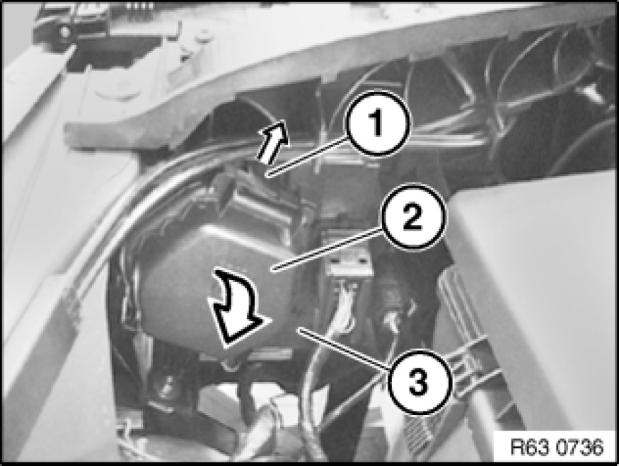
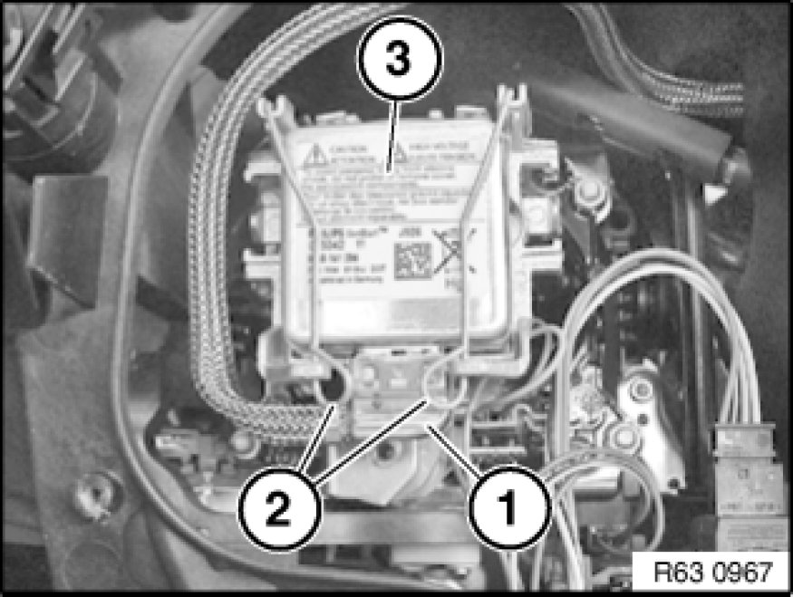

Replacing Ignition Unit for Left Xenon Headlight (With Xenon Bulb) (From 09/06)
63 12 870 - Replacing ignition unit for left xenon headlight (with xenon bulb) (from 09/06)

Warning!
Version with xenon headlights: Danger to life due to high voltage! Therefore, before removing, disconnect all components from the power supply (lighting system and ignition off).
Work on the entire xenon lighting system (control unit, ignition unit with bulb) may only be carried out by specialist personnel.
Follow instructions for handling light bulbs (exterior lights) Instructions for Handling Light Bulbs (Exterior Lights).

Important!
Ignition unit and xenon bulb are viewed as a single component and must not be separated.

Necessary preliminary tasks:
- N46:
Partially remove intake filter housing

Unlock catch (1) in direction of arrow and fold down cover (2).
Remove cover (2) from headlight (3).

Disconnect plug connection (1).
Unlock spring wire clips (2).
Remove ignition unit for xenon headlight (3) from headlight.
Installation Note:
Make sure ignition unit (3) is exactly seated on headlight.